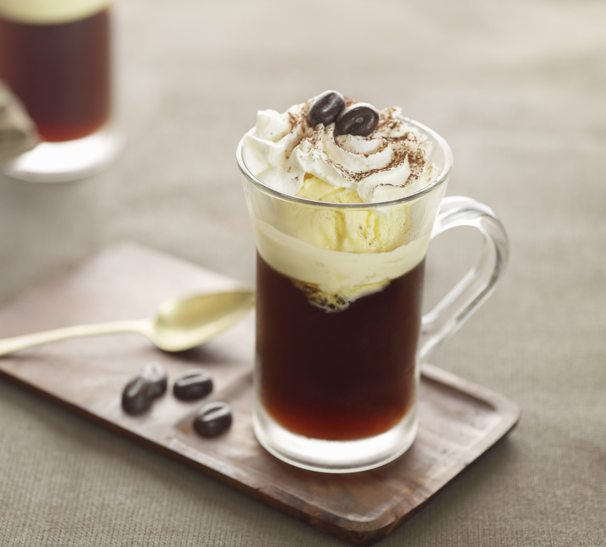
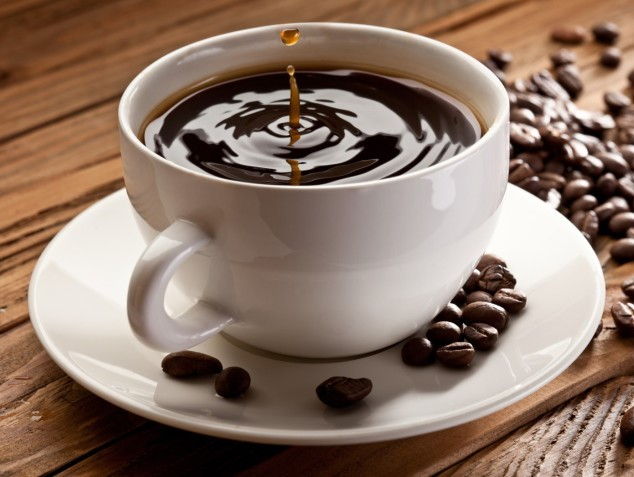

Фраппе (fr. frappé) – холодный растворимый кофе с пенкой. Рецепт был случайно придуман в Греции торговым представителем Nescafe чем объясняется использование сублимата. Готовится как коктейль в шейкере: 2 ложки растворимого кофе, сахар по вкусу, до 40 мл воды, взбить до появления пенки, вылить в высокий бокал со льдом и холодной водой.

Кофе по-ирландски
Кофе по-ирландски – горячий коктейль на основе ирландского виски и эспрессо. Порядок приготовления: сахар растворить в эспрессо, долить виски, сверху покрыть шапочкой из взбитого молока.

Американо
Американо – эспрессо обычный или двойной, в который после приготовления добавили (30–470 мл) горячей воды. Крепость зависит от количества шотов эспрессо. В Италии и Франции даже не пытайтесь просить Американо, вам принесут лунго.